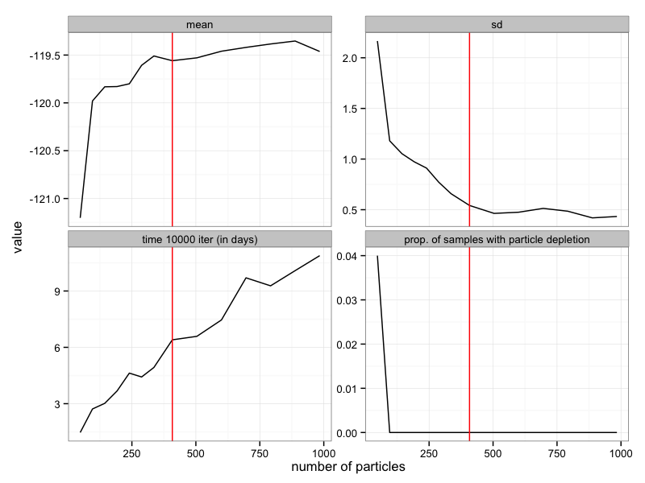
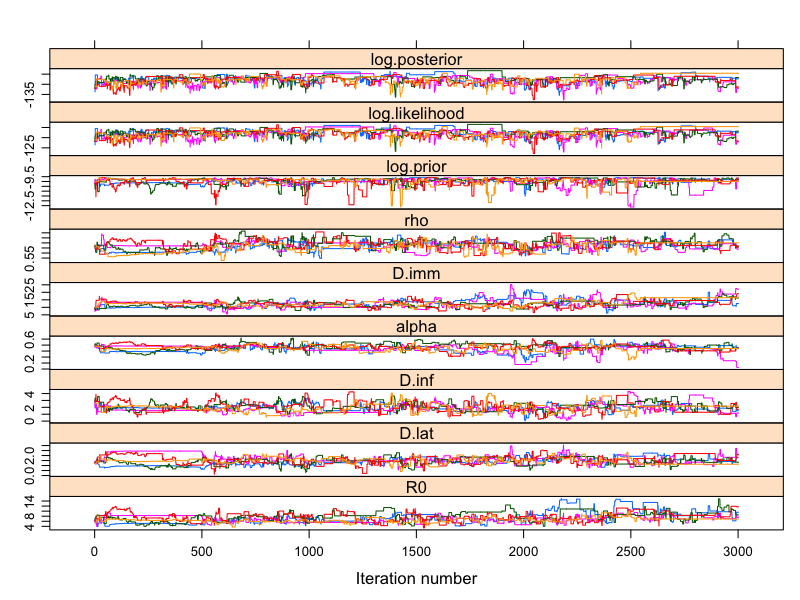
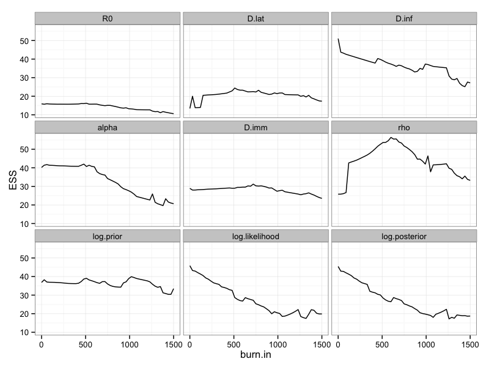
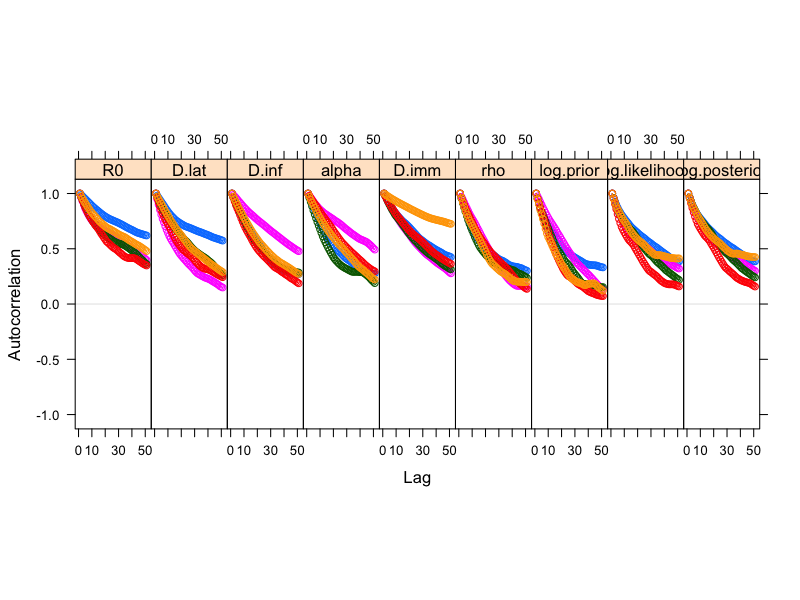
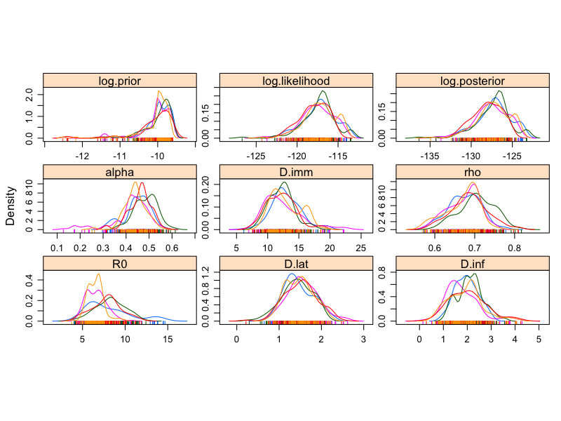
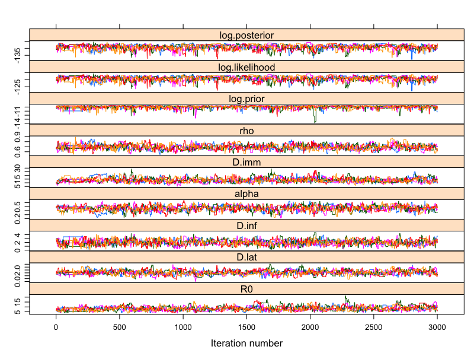
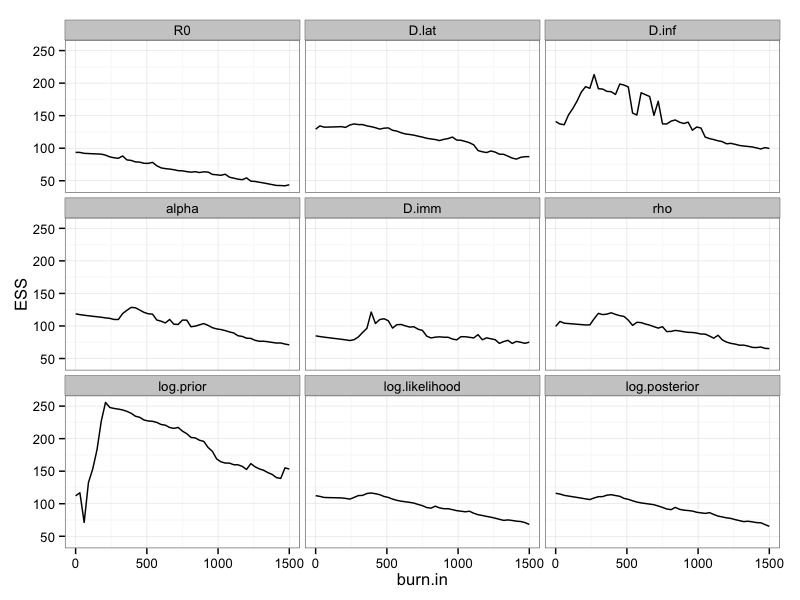
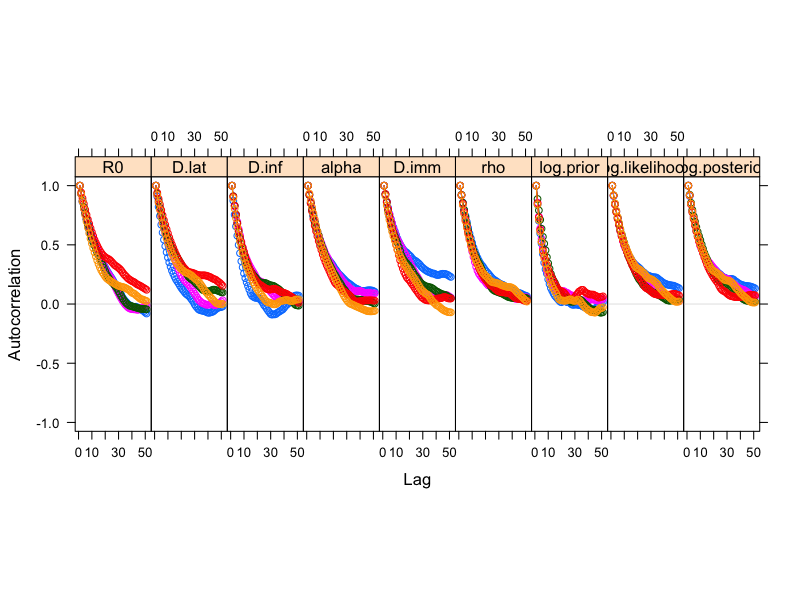
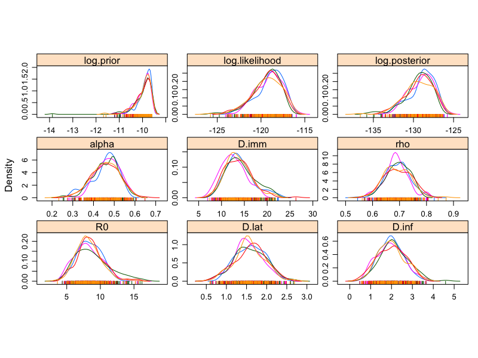
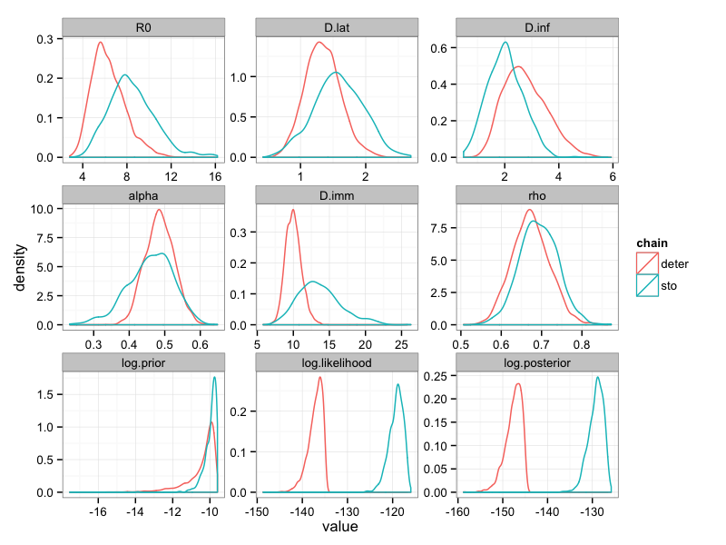

The particle filter returns a Monte-Carlo estimate of the log-likelihood and, as every Monte-carlo estimate, its precision depends on the number of particles.
If you have too few particles then you will have a highly variable estimate of the log-likelihood and this will make the exploration of the likelihood surface quite imprecise. In addition, you might experience particle depletion (if you don't know what that means just try to run a particle filter with a single particle).
If you have too many particles, then you will have an accurate estimate of your log-likelihood but it will be very time consuming so inefficient in practice.
In addition, the variability of the estimate might also depend on the region of the parameter space. For instance, in some region you might experience significant variability with 100 particles whereas in another region it might be fairly stable.
You can now return to the practical and try to think on a way to calibrate the number of particles.
Ideally we want enough particles to obtain a fairly stable estimate of the log-likelihood in a reasonable computational time.
A simple calibration approach consists in plotting the mean, standard deviation and computational time of the log-likelihood estimate as a function of the number of particles. Although several parameters can be tested, we will use a theta close to the mean posterior estimate of the deterministic fit since it is likely to be the region of the parameter space we want to explore with the pMCMC.
# load fitmodel, data and define init.state
example(SEIT2L_stochastic)
data(FluTdC1971)
init.state <- c(S = 279, E = 0, I = 2, T1 = 3, T2 = 0, L = 0, Inc = 0)
# pick a theta close to the mean posterior estimate of the deterministic fit
theta <- c(R0 = 7, D.lat = 1, D.inf = 4, alpha = 0.5, D.imm = 10, rho = 0.65)
# vector of number of particles to test
test.n.particles <- seq(50, 1000, 50)
# number of replicates
n.replicates <- 100
# vector and data frame of results
sample.log.like <- vector("numeric", length = n.replicates)
res <- data.frame()
for (n.particles in test.n.particles) {
# start measuring time
start.time <- Sys.time()
for (i in 1:n.replicates) {
# one Monte-Carlo estimate of the log-likelihood
sample.log.like[i] <- my_particleFilter(SEIT2L_sto, theta, init.state,
FluTdC1971, n.particles)
}
# end measuring time
end.time <- Sys.time()
# keep only replicate with finite log-likelihood to be able to compute the
# mean and sd this give us the proportion of replicates with particle
# depletion.
sample.finite.log.like <- sample.log.like[is.finite(sample.log.like)]
ans <- c(mean = mean(sample.finite.log.like), sd = sd(sample.finite.log.like),
prop.depletion = 1 - length(sample.finite.log.like)/length(sample.log.like),
time = end.time - start.time)
res <- rbind(res, t(ans))
}We ran this calibration algorithm and obtained the following results:

The mean and standard error of the log-likelihood estimate seem to stabilize around 400 particles (red line). By contrast, the computational time increases linearly with the number of particles. Using 400 particles looks optimal if we want a stable estimator while minimizing the computational time. Note however that it will take around 6 days to run 10000 times the particle filter with 400 particles. Since every step of the pMCMC requires to run a particle filter, that means that it will take 6 days to run 10000 iterations of the pMCMC. This is why you generally need a scientific computing cluster to run a pMCMC.
You can now return to the practical and set your pMCMC with 400 particles.
# the fitmodel
example(SEIT2L_stochastic)
# wrapper for posterior
my_posteriorSto <- function(theta) {
my_fitmodel <- SEIT2L_sto
my_init.state <- c(S = 279, E = 0, I = 2, T1 = 3, T2 = 0, L = 0, Inc = 0)
my_n.particles <- 400
# you can reduce the number of particles if your pMCMC is too slow
return(logPosterior(fitmodel = my_fitmodel, theta = theta, init.state = my_init.state,
data = FluTdC1971, margLogLike = my_particleFilter, n.particles = my_n.particles))
}
# load results of deterministic fit
data(mcmc_TdC_deter_longRun)
# Let's use the first trace only, no need to burn or thin
trace <- mcmc_SEITL_infoPrior_theta1$trace
# we will start the pMCMC at the mean posterior estimate of the
# deterministic fit
init.theta <- colMeans(trace[SEIT2L_sto$theta.names])
# and we take the empirical covariance matrix for the Gaussian kernel
# proposal
covmat <- mcmc_SEITL_infoPrior_theta1$covmat.empirical
# lower and upper limits of each parameter
lower <- c(R0 = 0, D.lat = 0, D.inf = 0, alpha = 0, D.imm = 0, rho = 0)
upper <- c(R0 = Inf, D.lat = Inf, D.inf = Inf, alpha = 1, D.imm = Inf, rho = 1)
# number of iterations for the MCMC
n.iterations <- 50 # just a few since it takes quite a lot of time
# Here we don't adapt so that we can check the acceptance rate of the
# empirical covariance matrix
adapt.size.start <- 100
adapt.size.cooling <- 0.99
adapt.shape.start <- 100You can now go back to the practical and try to run a pMCMC with those settings.
Here is an example of analysis of our 5 chains of 3000 iterations with 50 particles.
# load traces
data(pmcmc_SEIT2L_infoPrior_n50)
# combine into a `mcmc.list` object
trace <- mcmc.list(lapply(pmcmc_SEIT2L_infoPrior_n50, function(chain) {
mcmc(chain$trace)
}))
# acceptance rate is quite low
1 - rejectionRate(trace)
## R0 D.lat D.inf alpha D.imm
## 0.1277 0.1277 0.1277 0.1277 0.1277
## rho log.prior log.likelihood log.posterior
## 0.1277 0.1277 0.1277 0.1277
# accordingly, the combined ESS is quite low
effectiveSize(trace)
## R0 D.lat D.inf alpha D.imm
## 124.1 147.5 213.1 164.0 147.8
## rho log.prior log.likelihood log.posterior
## 181.5 272.0 232.9 222.5
# Let's have a look at the traces
xyplot(trace)
The burning period looks relatively short, this is because we started the chains with a "good" init.theta. That said, since we have relatively short runs it might be useful to carefully choose the burning period with plotESSBurn.
# this can take some time as we have 5 chains
plotESSBurn(trace)
# let's burn the 500 first iterations
trace.burn <- burnAndThin(trace, burn = 500)
# what about autocorrelation
acfplot(x = trace.burn, lag.max = 50)
# Although there is significant autocorrelation, we can't thin too much
# since the chains are quite short. So let's keep 1 iteration every 20
trace.burn.thin.n50 <- burnAndThin(trace.burn, thin = 20)
# Finally we can plot the posterior density
densityplot(x = trace.burn.thin.n50)
The 5 chains converged to somewhat different posterior distributions, with different shapes and modes. This is particularly evident for the posterior of \(R_0\), which looks bimodal. In addition, the ESS is too small to have smooth posterior distributions.
With so few particles, the likelihood estimate is very noisy and the exploration of the parameter space is not efficient. This is why we have a lot of autocorrelation and small ESSs. That said, the theoretical properties of the pMCMC guaranty that the chain will converge to the true posterior, even with 1 particle. Of course, this will take a lot of iterations so in practice it might be more efficient to spend more time computing the likelihood (i.e. having more particles) in order to the number of iterations.
You can now return to the practical and analyse a pMCMC with much more particles that we ran for you.
Here is an example of analysis of our 5 chains of 3000 iterations with 400 particles.
# load traces
data(pmcmc_SEIT2L_infoPrior_n400)
# combine into a `mcmc.list` object
trace <- mcmc.list(lapply(pmcmc_SEIT2L_infoPrior_n400, function(chain) {
mcmc(chain$trace)
}))
# acceptance rate is optimal
1 - rejectionRate(trace)
## R0 D.lat D.inf alpha D.imm
## 0.2375 0.2375 0.2375 0.2375 0.2375
## rho log.prior log.likelihood log.posterior
## 0.2375 0.2375 0.2375 0.2375
# Note that the combined ESS is 5 times higher than with 50 particles
effectiveSize(trace)
## R0 D.lat D.inf alpha D.imm
## 470.7 538.1 714.1 562.7 470.4
## rho log.prior log.likelihood log.posterior
## 599.9 965.0 569.8 571.1
# Let's have a look at the traces
xyplot(trace)
As in the analysis with 50 particles, the burning period is relatively short. However, with 400 particles the chains mix much better. Of course the chains take longer to run but because they mix better it becomes computationally more efficient to run many short chains in parallel, starting near the mode of the (deterministic) posterior, and combine them to increase the overall ESS.
Here again we decide to carefully choose the burning period with plotESSBurn.
# Actually, it looks like no burning is needed:
plotESSBurn(trace)
# What about autocorrelation?
acfplot(x = trace, lag.max = 50)
# Autocorrelation decreases much more quickly than with 50 particles Let's
# keep 1 iteration every 20
trace.thin.n400 <- burnAndThin(trace, thin = 20)
# Let's plot the posterior densities
densityplot(x = trace.thin.n400)
All 5 chains seems to have converged to the same posterior, which are smoother than with 50 particles. Let's compare the combined posterior densities with that obtained with 50 particles
plotPosteriorDensity(list(n50 = trace.burn.thin.n50, n400 = trace.thin.n400))
Although the posterior distributions are similar, those with 400 particles are smoother and more representative thanks to higher ESS. In addition, we can notice substantial differences in the location of the mode of \(R_0\), which is shifted to the left with 50 particles. Finally, note that the log-likelihood is overestimated with 50 particles, which can be problematic when doing model selection as we would overestimate the fit of the model.
Overall, this confirms that the pMCMC works even with 50 particles but that it will require much more iterations to achieve the same posterior as the pMCMC with 400 particles. Although the latter takes more time at each iteration, it provides more reliable estimates on short-runs.
You can now return to the practical and proceed to the last section of this session.
Here we compare the combined traces of the deterministic SEIT2L model (2 chains of \(10^5\) iterations) with those obtained with the stochastic version (5 chains of \(3000\) iterations). Both analysis assume informative priors.
# load, burn and thin the deterministic fit
# create mcmc object
trace1 <- mcmc(mcmc_SEIT2L_infoPrior_theta1$trace)
trace2 <- mcmc(mcmc_SEIT2L_infoPrior_theta2$trace)
# combine in a mcmc.list
trace <- mcmc.list(trace1, trace2)
# burn and thin as the chain with uniform prior (see above sections)
trace.deter <- burnAndThin(trace, burn = 5000, thin = 40)
# compare posterior density
plotPosteriorDensity(list(deter = trace.deter, sto = trace.thin.n400))
Overall, the posterior distributions are quite different. This is especially true for \(R_0\) and \(D_{imm}\). In addition, the discrepancy in the posterior distribution of the log-likelihood seems to indicate that the stochastic model fits much better. We can verify this by computing the DIC of the stochastic SEIT2L model.
# combine all traces in a data frame
trace.combined <- ldply(trace.thin.n400)
# take the mean of theta
theta.bar <- colMeans(trace.combined[SEIT2L_sto$theta.names])
## Error: object 'SEIT2L_sto' not found
print(theta.bar)
## Error: object 'theta.bar' not found
# compute its log-likelihood
init.state <- c(S = 279, E = 0, I = 2, T1 = 3, T2 = 0, L = 0, Inc = 0)
log.like.theta.bar <- -117.5994 # my_particleFilter(SEIT2L_sto,theta.bar, init.state, data=FluTdC1971, n.particles=400)
print(log.like.theta.bar)
## [1] -117.6
# and its deviance
D.theta.bar <- -2 * log.like.theta.bar
print(D.theta.bar)
## [1] 235.2
# the effective number of parameters
p.D <- var(-2 * trace.combined$log.likelihood)/2
print(p.D)
## [1] 4.972
# and finally the DIC
DIC <- D.theta.bar + 2 * p.D
print(DIC)
## [1] 245.1In the previous session, we found that the DIC of the deterministic SEIT2L model was equal to 280. The difference of 35 indicates that the stochastic model should strongly be preferred to the deterministic model.
We can visually check this result by plooting the posterior fit of each model:
# take the mean posterior estimates of the deterministic model
x <- summary(trace.deter)
theta.bar.deter <- x$statistics[SEIT2L_deter$theta.names, "Mean"]## Error: object 'SEIT2L_deter' not foundplotFit(SEIT2L_sto, theta.bar, init.state, data = FluTdC1971, n = 1000)## Error: object 'SEIT2L_sto' not foundplotFit(SEIT2L_deter, theta.bar.deter, init.state, data = FluTdC1971, n = 1000)## Error: object 'SEIT2L_deter' not foundDespite the fact that the deterministic model seems to better capture the first peak of the epidemic, the stochastic model better explains the variability of the observed time-series. In particular, the 95% CI of the stochastic model captures almost all the observed data points, even during the first peak.
Already finished? why not going further?